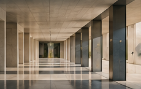
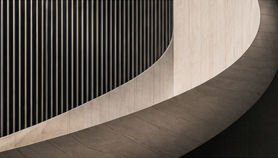

Our Investment Approach
A disciplined process for lasting value.
Our process
Identify
Recognising opportunities through research, market understanding and professional relationships.
Evaluate
Assessing commercial fundamentals, financial viability, investment potential and risks.
Structure
Developing appropriate investment structures and capital solutions.
Coordinate
Bringing together counterparties, expertise and resources to support implementation.
“A long-term perspective is at the heart of our investment philosophy.”
Our approach combines analysis, commercial judgement and thoughtful structuring across each stage of an opportunity.

What guides us
Fundamentals before speculation.
- Value creation over short-term market cycles
- Rigorous analysis and risk assessment
- Alignment of interests
- Building enduring professional relationships
Our perspective
Clear analysis. Thoughtful decisions.
Enduring relationships.
